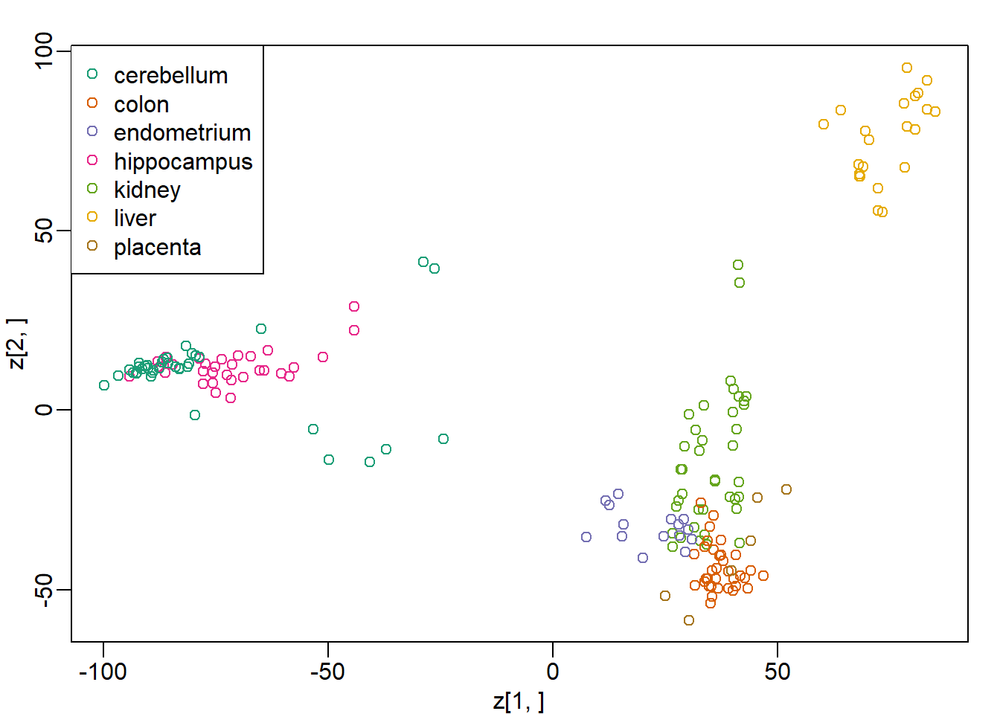

Chapter 8 Distance and Dimension Reduction
Note: I have rephrased some parts of the questions for clarity. These changes are bolded. Due to the random numbers, the exact values of the answers, despite the same seeds, might differ. So please be mindful of that.
First, upload necessary package(s).
library(dplyr) # uplaods the function filter() and %>%
library(rafalib) # important for plotting with base R
library(genefilter) # rowttests
#library(devtools) # allows download from github
library(GSE5859Subset) # subset of gene expression data
library(tissuesGeneExpression)
data(tissuesGeneExpression)8.4 Exercises
Question 1
How many biological replicates for hippocampus?
head(tissue) # from data(tissuesGeneExpression)## [1] "kidney" "kidney" "kidney" "kidney" "kidney" "kidney"table(tissue)['hippocampus']## hippocampus
## 31Question 2
What is the distance between samples 3 and 45?
d <- dist(t(e))
as.matrix(d)[3,45]## [1] 152.5662x <- e[,3]
y <- e[,45]
sqrt(crossprod(x-y))## [,1]
## [1,] 152.5662Question 3
What is the distance between gene 210486 and 200805_at?
x <- e[which(rownames(e)=='210486_at'),]
y <- e[which(rownames(e)=='200805_at'),]
sqrt(crossprod(x-y))## [,1]
## [1,] 41.01153Question 4
If I run the command (dont run it) d = as.matrix(dist(e)) how many cells (the number of rows times number of columns) will this matrix have?
22215 x 22215. dist computes distance between each row. So there will be 22215 x 22215 combinations of distance in the matrix form that dist can compute in data e, which has 22215 rows. In matrix form of the distance data, there are repeated combinations. If we instead put t(e) as input to run dist function, we will have 189 x 189 possible distances in the matrix form since t(e) has 189 rows.
Question 5
Compute the distance between all pair of samples:
d = dist(t(e))Read help file for dist. How many distances are stored in d? Hint: What is the length of d?
length(d)## [1] 17766Question 6
Why is the answer to Question 5 not ncol(e)^2?
The answer is C: Because we take advantage of symmetry: only the lower triangular matrix of the full distance matrix is stored thus, only ncol(e)*(ncol(e)-1)/2 values. If you are still confused, you can run this demonstration.
set.seed(1)
random_number <- matrix(rnorm(4*4),4,4) # 4x4 matrix of random numbers
d_random <- dist(random_number)
d_random ## 1 2 3
## 2 2.300929
## 3 1.998475 4.147861
## 4 2.338790 3.100611 2.932507as.matrix(d_random)## 1 2 3 4
## 1 0.000000 2.300929 1.998475 2.338790
## 2 2.300929 0.000000 4.147861 3.100611
## 3 1.998475 4.147861 0.000000 2.932507
## 4 2.338790 3.100611 2.932507 0.000000Notice that all the repeated combinations of two rows in random_number are removed in d_random. Also, there is 0 distance between the same row (1st row vs 1st row), so this is removed in d_random too. However, these numbers are displayed after it is converted into matrix.
8.7 Exercises
library(tissuesGeneExpression)
data(tissuesGeneExpression)Question 1
Compute the SVD of e
s = svd(e)Now compute the mean of each row:
m = rowMeans(e)What is the correlation between the first column of U and m?
U <- s$u
cor(U[,1],m)## [1] -0.9999998Question 2
In Question 1 we saw how the first column relates to the mean of the rows of e. If we change these means, the distances between the columns do not change. For example, changing the mean does not change the distance.
newmeans = rnorm(nrow(e)) ##random values we will add to create new means
newe = e+newmeans ##we change the means
sqrt(crossprod(e[,3]-e[,45]))## [,1]
## [1,] 152.5662sqrt(crossprod(newe[,3]-newe[,45]))## [,1]
## [1,] 152.5662So we might as well make the mean of each row 0, since it does not help us approximate the column distances. We will define y as the detrended e and recompute the SVD:
y = e - rowMeans(e)
s = svd(y)We showed that \(UDV^T\) is equal to y up to numerical error:
resid = y - s$u %*% diag(s$d) %*% t(s$v)
max(abs(resid))## [1] 1.188383e-12The above can be made more efficient in two ways. First using the crossprod and, second, not creating a diagonal matrix. In R, we can multiply matrices x by vector a. The result is a matrix with rows i equal to x[i,]*a[i]. Run the following example to see this.
x=matrix(rep(c(1,2),each=5),5,2)
x*c(1:5)## [,1] [,2]
## [1,] 1 2
## [2,] 2 4
## [3,] 3 6
## [4,] 4 8
## [5,] 5 10which is equivalent to:
sweep(x,1,1:5,"*")## [,1] [,2]
## [1,] 1 2
## [2,] 2 4
## [3,] 3 6
## [4,] 4 8
## [5,] 5 10This means that we dont have to convert s$d into a matrix. Which of the following gives us the same as diag(s$d) %*% t(s$v)?
identical(diag(s$d) %*% t(s$v),t(s$v) * s$d)## [1] TRUEidentical(s$d * t(s$v), t(s$v) * s$d)## [1] TRUEUse identical or near function to compare each answer choice. The answer is B: s$d * t(s$v). To fully understand this question, you will need to understand how a vector and matrix multiply * together in R. s$d is a vector, and s$v is a matrix.
is.vector(s$d) # it is not matrix## [1] TRUEis.matrix(s$v) # it is not vector## [1] TRUEQuestion 3
If we define vd = t(s$d * t(s$v)), then which of the following is not the same as \(UDV^T\)?
vd = t(s$d * t(s$v))
identical(s$d * t(s$v), t(vd))## [1] TRUE#(t(s$d) * s$u) %*% t(s$v)
yhat <- s$u %*% t(vd)
identical(s$u %*% (s$d * t(s$v)),yhat)## [1] TRUE#identical(s$u %*% s$d * t(s$v),yhat)
all(near(tcrossprod(t(s$d*t(s$u)),s$v),yhat))## [1] TRUEThe answer is B: s$u %*% s$d * t(s$v).
Question 4
Let z = s$d * t(s$v). We showed a derivation demonstrating that because U is orthogonal, the distance between e[,3] and e[,45] is the same as the distance between y[,3] and y[,45], which is the same as vd[,3] and vd[,45]
z = s$d * t(s$v)
sqrt(crossprod(e[,3]-e[,45])) # raw data## [,1]
## [1,] 152.5662sqrt(crossprod(y[,3]-y[,45])) # standardized data## [,1]
## [1,] 152.5662sqrt(crossprod(z[,3]-z[,45])) # principal compoennt ## [,1]
## [1,] 152.5662Note that the columns of z have 189 entries, compared to 22,215 for e. What is the difference, in absolute value, between the actual distance:
sqrt(crossprod(e[,3]-e[,45]))## [,1]
## [1,] 152.5662and the approximation using only two dimensions of z?
sqrt(crossprod(e[,3]-e[,45])) - sqrt(crossprod(z[1:2,3]-z[1:2,45]))## [,1]
## [1,] 40.62416Recall that s$d describes proportion of variability for each principal component. However, each column of s$v represents each dimension (i.e., principal component). Since z is a product of s$d and t(s$v), the column of s$v now becomes part of the row of z. Therefore, each row of z now represents dimension.
Question 5
How many dimensions do we need to use for the approximation in Question 4 to be within 10%?
actual <- sqrt(crossprod(e[,3]-e[,45]))
percent <- vector('double', nrow(z))
for (i in seq_along(percent)) {
percent[[i]] <- (actual - sqrt(crossprod(z[1:i,3]-z[1:i,45])))/actual
}
ind <- min(which(percent < 0.10))
ind## [1] 7Question 6
Compute distances between sample 3 and all other samples.
actual <- as.matrix(dist(t(z)))[,3]
actual## 1 2 3 4 5 6
## 84.38089 112.12484 0.00000 95.48853 103.02366 41.39058
## 7 8 9 10 11 12
## 120.54709 36.66649 116.54225 39.98554 104.62072 40.10262
## 13 14 15 16 17 18
## 95.22417 37.43360 103.77843 46.22469 153.60546 159.44848
## 19 20 21 22 23 24
## 158.23033 156.64142 162.45229 154.29005 155.71326 156.25691
## 25 26 27 28 29 30
## 152.20062 150.52553 161.24814 168.10634 164.49951 171.58095
## 31 32 33 34 35 36
## 170.24450 153.52016 156.55839 161.07539 154.90893 157.61983
## 37 38 39 40 41 42
## 157.12698 156.93071 148.09296 156.37590 153.24192 157.81780
## 43 44 45 46 47 48
## 148.30794 147.54293 152.56616 153.65874 164.69072 158.77685
## 49 50 51 52 53 54
## 170.34769 168.79908 164.20355 166.28936 171.72410 160.05604
## 55 56 57 58 59 60
## 164.09831 158.68927 161.63299 164.91892 164.79351 163.56547
## 61 62 63 64 65 66
## 166.59989 167.62435 169.44196 172.55600 163.57509 171.89005
## 67 68 69 70 71 72
## 158.20437 159.96501 160.61071 171.25465 166.53772 166.44195
## 73 74 75 76 77 78
## 163.15348 62.30391 119.00899 115.62884 63.82724 114.17344
## 79 80 81 82 83 84
## 110.82250 120.55301 103.46344 51.06013 113.66075 116.50881
## 85 86 87 88 89 90
## 110.49660 119.25277 131.03507 133.61119 133.14274 139.96254
## 91 92 93 94 95 96
## 132.27121 127.30041 130.97078 136.00334 137.96283 136.13730
## 97 98 99 100 101 102
## 141.05467 131.06920 137.78546 132.91823 126.05454 129.27069
## 103 104 105 106 107 108
## 138.11669 132.97576 138.75735 136.01474 135.14692 134.83457
## 109 110 111 112 113 114
## 133.94075 139.59132 129.95129 131.93296 132.09485 132.79052
## 115 116 117 118 119 120
## 135.67441 127.34644 135.19080 129.27466 127.99943 128.82659
## 121 122 123 124 125 126
## 88.05529 89.69452 102.98278 133.53410 134.44093 133.04278
## 127 128 129 130 131 132
## 89.78634 90.87303 91.06495 132.95120 135.26307 134.99663
## 133 134 135 136 137 138
## 92.81078 87.71962 154.40639 155.35270 138.55124 144.02792
## 139 140 141 142 143 144
## 137.71813 134.93648 141.51875 140.16215 165.64068 165.52451
## 145 146 147 148 149 150
## 172.36133 172.60481 138.27076 119.35965 128.31795 135.37817
## 151 152 153 154 155 156
## 129.86141 129.53708 135.17874 129.74547 127.67693 126.07782
## 157 158 159 160 161 162
## 137.80298 137.65179 132.81058 143.50110 136.17646 132.49355
## 163 164 165 166 167 168
## 135.20594 141.87962 139.84780 142.18828 141.56300 141.87962
## 169 170 171 172 173 174
## 142.18828 141.56300 139.84780 139.08274 139.02476 142.96349
## 175 176 177 178 179 180
## 143.28705 146.46947 156.49378 163.16367 154.50386 148.70081
## 181 182 183 184 185 186
## 165.59121 161.49215 175.57875 178.92871 174.51879 164.19632
## 187 188 189
## 164.93630 164.13792 169.21046Question 7
Recompute this distance using the two dimensional approximation. What is the Spearman correlation between this approximate distance (z) and the actual distance?
approx2 <- as.matrix(dist(t(z[1:2,])))[,3]
cor.test(approx2,actual,method='spearman')$estimate## Warning in cor.test.default(approx2, actual, method = "spearman"):
## Cannot compute exact p-value with ties## rho
## 0.86207318.11 Exercises
Question 1
Using the z we computed in Question 4 of the previous exercises
library(tissuesGeneExpression)
data(tissuesGeneExpression)
y = e - rowMeans(e)
s = svd(y)
z = s$d * t(s$v)e can make an mds plot:
library(rafalib)
ftissue = factor(tissue)
mypar(1,1)
plot(z[1,],z[2,],col=as.numeric(ftissue))
legend("topleft",levels(ftissue),col=seq_along(ftissue),pch=1)
Now run the function cmdscale on the original data:
d = dist(t(e))
mds = cmdscale(d)What is the absolute value of the correlation between the first dimension of z and the first dimension in mds?
cor(z[1,],mds[,1])## [1] -1Question 2
What is the absolute value of the correlation between the second dimension of z and the second dimension in mds?
cor(z[2,],mds[,2])## [1] -1Question 3
Load the following dataset:
library(GSE5859Subset)
data(GSE5859Subset)Compute the svd and compute z.
s = svd(geneExpression-rowMeans(geneExpression))
z = s$d * t(s$v)Which dimension of z most correlates with the outcome sampleInfo$group?
s = svd(geneExpression - rowMeans(geneExpression))
z = s$d * t(s$v)
sampleInfo$group## [1] 1 1 1 1 1 1 1 1 1 1 1 1 0 0 0 0 0 0 0 0 0 0 0 0res <- vector('double',nrow(z))
for (i in seq_along(res)) {
res[[i]] <- cor(sampleInfo$group, z[i,])
}
which(res == max(abs(res)))## [1] 1Question 4
What is this max correlation?
max(res)## [1] 0.6236858Question 5
Which dimension of z has the second highest correlation with the outcome sampleInfo$group?
ind <- which(res == sort(res,decreasing = T)[2])
ind## [1] 6Question 6
Note these measurements were made during two months: sampleInfo$date
We can extract the month this way:
month = format( sampleInfo$date, "%m")
month = factor( month)Which dimension of z has the second highest correlation with the outcome month?
month = format( sampleInfo$date, "%m")
month = as.numeric(month)
res <- vector('double',nrow(z))
for (i in seq_along(res)) {
res[[i]] <- cor(month, z[i,])
}
ind <- which(res == sort(res,decreasing = T)[2])
ind## [1] 2Question 7
What is this correlation?
res[ind]## [1] 0.4479168Question 8
The same dimension is correlated with both the group and the date. The following are also correlated:
table(sampleInfo$g, month)## month
## 6 10
## 0 9 3
## 1 3 9So is this first dimension related directly to group or is it related only through the month? Note that the correlation with month is higher. This is related to batch effects which we will learn about later.
In Question 3 we saw that one of the dimensions was highly correlated to the sampleInfo$group. Now take the 5th column of \(U\) and stratify by the gene chromosome. Remove chrUn and make a boxplot of the values of \(U_5\) stratified by chromosome. Which chromosome looks different from the rest? Copy and paste the name as it appears in geneAnnotation.
gene_list <- split(geneAnnotation$PROBEID, geneAnnotation$CHR)
res <- split(s$u[,5], geneAnnotation$CHR)
res$chrUn <- NULL
res <- rev(res) # reverse the order of the list so that chrY is the first x-axis tick
mypar()
boxplot(res)chrY is the answer.